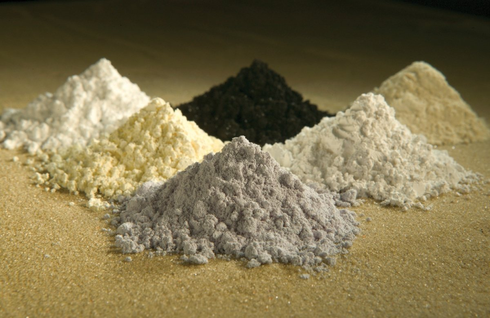

Separacja, rafinacja i metalurgia
Najważniejsza dana: 60 procent (wydobycie REO) - "In 2024, the People's Republic of China (hereafter," 2
W skrócie
Wąskim gardłem łańcucha ziem rzadkich nie jest samo wydobycie, lecz rozdzielenie chemicznie podobnych pierwiastków i przetworzenie ich w metal do magnesów. Chiny mają 91% światowej produkcji rafinowanej, dlatego przewagę zachowują zakłady z działającymi kaskadami, doświadczonymi operatorami i odbiorcami, a projekty sprzedające wyłącznie koncentrat pozostają zależne od cudzych mocy przetwórczych. Koszt jednostkowy chińskiej separacji jest NIE UJAWNIONY, natomiast skala wsparcia konkurencji jest jawna: MP Materials otrzymało pożyczkę 150 mln USD, czyli dolarów amerykańskich, a Eneabba 1,65 mld AUD, czyli dolarów australijskich. Zdolności poza Chinami rosną, ale ich tempo ograniczają rozruch, subsydia i ryzyko, że moc projektowa nie stanie się sprzedażą handlową. Dla inwestora oznacza to premię dla podmiotów, które łączą separację z kolejnymi etapami Łańcuch magnesów trwałych NdFeB i SmCo, oraz ostrożność wobec zapowiedzi dywersyfikacji bez działającego zakładu Dywersyfikacja i budowa łańcucha poza Chinami. 234

Rycina 19: Sześć wyseparowanych tlenków ziem rzadkich (m.in. prazeodymu, ceru, lantanu, neodymu, samaru i gadolinu) będących produktem procesu separacji i rafinacji.1
Ekstrakcja rozpuszczalnikowa i bariera know-how
Ekstrakcja rozpuszczalnikowa przenosi jony metali między fazą wodną i organiczną. P507, P204 i Cyanex 272 są ekstrahentami, czyli odczynnikami selektywnie wiążącymi jony; dla P204 i Cyanex 272 parametry przemysłowe są NIE UJAWNIONE. Chiny odpowiadają jednak za 70-90% produkcji P507 i zużywają ponad 80% światowych ekstrahentów do separacji REE, czyli pierwiastków ziem rzadkich. Dla inwestora dostęp do odczynników i wiedzy o ich stosowaniu jest zatem równie ważny jak dostęp do surowca. 5
Mixer-settler to stopień mieszania i odstania obu faz. Ponieważ sąsiednie lantanowce różnią się nieznacznie, potrzebne są kaskady: instalacja Nd/Pr, czyli neodymu i prazeodymu, miała 72 stopnie ekstrakcji, 72 płukania i 8 reekstrakcji. Barierą pozostaje stabilne prowadzenie całej kaskady, zwłaszcza że poza Chinami działa tylko garstka doświadczonych specjalistów, podczas gdy Chiny mają tysiące inżynierów z wieloletnią praktyką. To premiuje operatorów z zespołem zdolnym utrzymać powtarzalną jakość, co warto zestawić z mapą podmiotów w Mapa kluczowych graczy w łańcuchu. 67
Koncentracja chińska i zakaz technologiczny
IEA przypisuje Chinom 91% rafinacji i separacji, a Baker Institute 89% samej separacji. Przewaga rośnie w trudniejszym segmencie: około 90% LREE, czyli lekkich ziem rzadkich, i do 98% HREE, czyli ciężkich ziem rzadkich; CSIS podaje dla HREE 99,9%. Dla inwestora rozbieżność między szacunkami nie zmienia obrazu rynku, na którym ryzyko koncentracji jest strukturalne. 2859
Skalę chińskiego zaplecza pokazuje Northern Rare Earth, które wyprodukowało 174 900 ton metrycznych REO, czyli ekwiwalentu tlenków ziem rzadkich, produktów przetopu i separacji w 2023 r., podczas gdy chińska kwota na 2024 r. wyniosła 254 000 ton. Tak duża baza produkcyjna utrudnia nowym zakładom konkurowanie kosztami i szybkością uczenia się. 1011
Do przewagi skali dochodzi ochrona technologii: 21 grudnia 2023 r. Chiny zakazały eksportu technologii ekstrakcji i separacji REE, a kontrola obejmuje zbiorniki ekstrakcyjne z komorą mieszania 0,5-14,2 m3, czyli metrów sześciennych. Chroni to wiedzę procesową, ale nie dowodzi opóźnienia każdego projektu zagranicznego. Dla inwestora zakaz zwiększa wartość samodzielnie rozwiniętego know-how, choć nie przekreśla dywersyfikacji opisanej szerzej w Geopolityka i koncentracja łańcucha dostaw. 912
Separacja poza Chinami
Najdojrzalszy łańcuch poza Chinami łączy Kalgoorlie w Australii z LAMP w Kuantan w Malezji, czyli zakładem materiałów zaawansowanych Lynas. Spółka osiągnęła 6 558 ton metrycznych NdPr w FY2025, czyli roku obrotowym 2025, o 16% więcej niż rok wcześniej, a moc LAMP po rozbudowie szacuje się na 10 500 ton rocznie. Tylko Lynas i MP Materials produkowały poza Chinami separowany NdPr w skali komercyjnej. Dla inwestora Lynas stanowi punkt odniesienia, ponieważ łączy działającą logistykę, produkcję i wzrost mocy. 13131415
W Stanach Zjednoczonych MP Materials w Mountain Pass wyprodukowało 1 294 tony tlenku NdPr w 2024 r. i uzyskało 57,8 mln USD przychodu ze sprzedaży tlenku i metalu. Energy Fuels uruchomiło natomiast w White Mesa w Utah obwód o mocy 850-1 000 ton NdPr rocznie, ale wytworzyło około 38 ton. Różnica między projektem a faktycznym wolumenem pokazuje, że dla wyceny ważniejszy jest udany rozruch niż sama moc nominalna. 1617
W Europie Neo rozwija Silmet w Estonii od początkowej mocy HREE 2 000 ton rocznie do 5 000 ton, powiązanej z zakładem magnesów w Narwie o mocy 2 000 ton. Solvay chce, by La Rochelle pokrywało 30% europejskiego popytu do 2030 r., a Carester planuje w Caremag 800 ton tlenków NdPr i 600 ton Dy+Tb rocznie przy finansowaniu 216 mln EUR, czyli euro. Te projekty mogą zmniejszyć zależność regionu, lecz ich wartość inwestycyjna zależy od przejścia od finansowania i celów do regularnej sprzedaży. 181920
Iluka buduje Eneabba w Australii, ale źródła odmiennie opisują skalę projektu. Jedno podaje moc 23 000 ton REO rocznie, w tym 5 500 ton NdPr i 725 ton Dy/Tb, drugie zaś 17 500 ton tlenków z 55 000 ton wsadu i zaawansowanie budowy ponad 50%. Mocy docelowej nie należy sumować z bieżącą produkcją, dlatego inwestor powinien oddzielać potencjał zakładu od wolumenu dostępnego na rynku. 214
Kraking, ługowanie i oczyszczanie
Kraking rozbija strukturę minerału, a ługowanie przenosi REE do roztworu. Bastnazyt praży się z 98% H2SO4, czyli kwasem siarkowym, w 400-500°C, czyli stopniach Celsjusza; powstają CO2 i HF, czyli dwutlenek węgla i fluorowodór. Monazyt można z kolei ługować alkalicznie w 70% NaOH, czyli wodorotlenku sodu, w autoklawie przy 140-150°C. Następnie usuwa się Fe, Al, Ca i Th, czyli żelazo, glin, wapń i tor; odzyski, zużycie odczynników i strumień toru są NIE UJAWNIONE. Dla inwestora oznacza to istotne ryzyko kosztowe i środowiskowe tam, gdzie projekt nie ujawnia bilansu odczynników oraz odpadów. 222323
Od tlenku do metalu i stopu
Nd i Pr redukuje się przez elektrolizę stopionych soli, czyli przepływ prądu przez ciekły elektrolit, przy około 1 050°C. Elektroosadzanie Nd w cieczach jonowych zużywało 3,3 kWh/kg, czyli kilowatogodziny na kilogram i jedną trzecią energii procesu stopionych soli. Dy i Tb redukuje się metalotermicznie wapniem, czyli reakcją tlenku z metalicznym reduktorem, lecz parametry i miejsca handlowej produkcji są NIE UJAWNIONE. Dla inwestora przewagę mogą uzyskać procesy ograniczające zużycie energii, o ile potwierdzą stabilność i skalę przemysłową. 242424
Fizycznie udokumentowane ogniwa poza Chinami to Mountain Pass dla NdPr oraz Woburn w Massachusetts dla obecnej instalacji Phoenix Tailings o mocy 40 ton metalu rocznie; planowane Exeter w New Hampshire ma osiągnąć moc 500 ton. Strip casting to szybkie odlewanie stopu NdFeB, czyli neodym-żelazo-bor, na chłodzony walec, a patent opisuje taśmę 200-400 mikrometrów. Narwa jest miejscem produkcji magnesów spiekanych, lecz rozmieszczenie elektrolizy, metalotermii i strip castingu w pełnym łańcuchu jest NIE UJAWNIONE. Oznacza to, że inwestor powinien weryfikować nie tylko obecność poszczególnych aktywów, ale też ich rzeczywistą integrację. 252627
Nowe technologie
RapidSX Ucore jest odmianą ekstrakcji rozpuszczalnikowej. Demonstrator w Kingston w Ontario ma 52 stopnie i przepracował około 5 700 godzin, podczas gdy planowany kompleks w Luizjanie ma moc około 9 600 ton TREO rocznie, czyli całkowitego ekwiwalentu tlenków REE. Dla inwestora jest to sygnał postępu technicznego, ale demonstracja nadal nie zastępuje dowodu powtarzalnej produkcji handlowej. 2829
ReElement stosuje chromatografię, czyli ciągłe rozdzielanie jonów na złożu. Noblesville ma moc ponad 250 ton rocznie produktu o czystości 99,9-99,999%, ale cztery planowane linie w Marion mają przekroczyć 16 000 ton. Aclara planuje w Port of Vinton 1 400 ton NdPr, 200 ton Dy i 30 ton Tb rocznie przy inwestycji 277 mln USD. Membrany, ciągła wymiana jonowa i bioługowanie, czyli odzysk z użyciem mikroorganizmów, nie mają w materiale zweryfikowanej produkcji tonażowej ani kosztu - skala komercyjna jest NIE UJAWNIONA. Dla inwestora największym ryzykiem pozostaje przeskok od mniejszej instalacji do wielokrotnie ambitniejszej obietnicy. 30313233
xychart-beta title "Udział Chin w separacji REE (proc.)" x-axis ["Lekkie REE", "Ciężkie REE"] y-axis "Procent" bar [90, 98]
Rycina 9: Udział Chin w separacji lekkich i ciężkich ziem rzadkich (procent).
Kontrowersje
Dokładny udział Chin w separacji
Ostrożniejszy szacunek to 89%, a IEA podaje 91% rafinacji i separacji. Różnica wynika z zakresu pomiaru i nie usuwa wniosku o wyjątkowo silnej koncentracji rynku. 82
Wyższe wartości dotyczą innych koszyków: do 98% HREE i 99,9% HREE. Wartość 92% w materiale dotyczy rynku NdFeB, nie separacji, a dolna wartość z zadanego przedziału jest NIE POTWIERDZONA. Inwestor powinien więc porównywać definicje wskaźników, zamiast traktować każdą wartość jako opis tego samego rynku. 598
Czy separacja HREE poza Chinami istnieje
Za odpowiedzią twierdzącą przemawia Lynas, określony w maju 2025 r. jako jedyny komercyjny producent separowanych HREE poza Chinami. Sceptycy wskazują, że Chiny nadal mają 99,9% HREE, a moce Neo 2 000 ton, Carester 600 ton i Eneabba 725 ton są początkowe lub docelowe, nie równoważne ze sprzedażą. Dla inwestora samo istnienie technologii nie jest więc jeszcze dowodem na istotną zmianę podaży. 349182021
Rentowność bez subsydiów
Za wykonalnością przemawia to, że Northern Rare Earth i Lynas utrzymały dodatnią marżę rafinacji w 2024 r. Jednocześnie MP wykazało 39,2 mln USD skorygowanej EBITDA, czyli wyniku operacyjnego przed odsetkami, podatkami i amortyzacją, w Q4 2025, czyli czwartym kwartale, przy 51,016 mln USD ochrony ceny, a szacunek bez tej płatności daje blisko -12 mln USD. Podłoga 110 USD/kg NdPr, czyli dolarów amerykańskich za kilogram dla MP, kontrastuje z chińską ceną 49 USD/kg w grudniu 2024 r. Dla inwestora oznacza to, że rentowność zachodnich mocy może zależeć bardziej od wsparcia publicznego niż od samej przewagi technologicznej. 353637338
Technologia rzeczywista czy vaporware
Vaporware oznacza obietnicę technologii bez potwierdzonego produktu. Najmocniejsze dowody mają Phoenix z działającą mocą 40 ton rocznie i ReElement z mocą ponad 250 ton. Sceptycyzm uzasadnia jednak skok obietnic do 500 ton Phoenix i ponad 16 000 ton ReElement, podczas gdy RapidSX pozostaje demonstratorem 52-stopniowym po 5 700 godzinach. Dla membran, ciągłej wymiany jonowej i bioługowania brak porównywalnego tonażu, dlatego inwestor powinien dyskontować projekty bez sprzedaży handlowej i danych operacyjnych. 2530263128
Realny efekt zakazu z 2023 r.
Za skutecznością restrykcyjnego otoczenia przemawia spadek eksportu itru do USA z 333 do 17 ton oraz spadek chińskich dostaw magnesów do UE o około 75%. Przeciw przypisywaniu tego zakazowi technologii przemawia brak dowodu przyczynowego: mimo produkcji 8 900 ton związków i metali w Mountain Pass USA nadal sprowadzały 71% importu REE z Chin. Dane obejmują późniejsze ograniczenia produktów i licencji, więc nie izolują efektu zakazu know-how z 21 grudnia 2023 r. Dla inwestora restrykcje są realnym ryzykiem dostaw, ale nie pozwalają przypisać całego efektu jednemu instrumentowi polityki. 394039
Spółki powiązane
- China Northern Rare Earth (600111, SSE) - profil deep
- Energy Fuels (UUUU, NYSE) - profil deep
- Iluka Resources (ILU, ASX) - profil deep
- Lynas Rare Earths (LYC, ASX) - profil deep
- MP Materials (MP, NYSE) - profil deep
- Neo Performance Materials (NEO, TSX) - profil deep
- Aclara Resources (ARA, TSX) - profil lite
- Solvay (SOLB, Euronext) 🇪🇺 - profil lite
- Xiamen Tungsten (600549, SSE) - profil lite
Źródła
- ilustracja - https://commons.wikimedia.org/wiki/File:Rareearthoxides.jpg
- IEA - https://www.iea.org/reports/rare-earth-elements/executive-summary
- MP Materials - https://mpmaterials.com/news/mp-materials-announces-transformational-public-private-partnership-with-the-department-of-defense-to-accelerate-u-s-rare-earth-magnet-independence/
- Mining Weekly - https://www.miningweekly.com/article/eneabba-rare-earths-refinery-australia-update-2026-06-26
- Rare Earth Exchanges - https://rareearthexchanges.com/news/rare-earth-separation-is-the-real-chokepoint/
- Google Patents - https://patents.google.com/patent/EP2388344A1/en
- Rare Earth Exchanges - https://rareearthexchanges.com/news/why-separating-and-refining-rare-earth-elements-is-so-difficult-to-scale/
- Baker Institute - https://www.bakerinstitute.org/research/chinese-behemoths-what-chinas-rare-earths-dominance-means-us
- CSIS - https://www.csis.org/analysis/what-chinas-ban-rare-earths-processing-technology-exports-means
- Rare Earth Exchanges - https://rareearthexchanges.com/news/northern-gold-dragons-greenlight-baotou-expands-its-grip-on-rare-earth-separation/
- Mining.com - https://www.mining.com/web/chinas-2024-rare-earth-mining-output-smelting-and-separation-quotas-set-to-rise/
- China Briefing - https://www.china-briefing.com/news/technologies-subject-to-export-control-in-china-prohibited-restricted-export-catalogue/
- Lynas - https://announcements.asx.com.au/asxpdf/20250828/pdf/06ngtkbmf2fb5g.pdf
- Discovery Alert - https://discoveryalert.com.au/lynas-rare-earths-processing-malaysia-2025-operations-impact/
- Rare Earth Exchanges - https://rareearthexchanges.com/news/rare-earth-exchangest-releases-global-processor-rankings-whos-really-making-magnet-grade-oxides-outside-china/
- MP Materials - https://investors.mpmaterials.com/investor-news/news-details/2025/MP-Materials-Reports-Fourth-Quarter-and-Full-Year-2024-Results/default.aspx
- Energy Fuels - https://www.sec.gov/Archives/edgar/data/1385849/000138584924000052/efr-20240930.htm
- Mining.com - https://www.mining.com/neo-performance-begins-producing-heavy-rare-earths-at-estonia-plant/
- Solvay - https://www.solvay.com/en/press-release/solvay-advances-european-rare-earths-production-through-capacity-expansion
- Carester - https://www.carester.fr/en/caremag-launch/
- Rare Earth Exchanges - https://rareearthexchanges.com/news/lindian-iluka-tie-up-signals-a-new-era-for-australias-rare-earth-refining-ambition/
- ScienceDirect - https://www.sciencedirect.com/science/article/abs/pii/S0304386X18309666
- Britannica - https://www.britannica.com/science/rare-earth-element/Processing-ores
- EURARE - https://www.eurare.org/technologies/REE-metal-production.html
- Business Wire - https://www.businesswire.com/news/home/20250430735778/en/Rare-Earth-Metals-Refining-Company-Phoenix-Tailings-Closes-on-Additional-$33M-in-Funding-From-Strategic-Investors-Bringing-the-Round-up-to-$76M-to-Support-Rare-Earth-Metal-Independence
- Metal Powder - https://www.metal-powder.tech/phoenix-tailings-advances-1b-rare-earth-project-with-500m-osc-financing/
- USPTO - https://image-ppubs.uspto.gov/dirsearch-public/print/downloadPdf/6319335
- Ucore - https://ucore.com/ucore-readies-for-louisiana-2026-heavy-rare-earth-element-processing/
- Newsfile - https://www.newsfilecorp.com/release/299208/Ucore-Engineering-Report-Drives-Optimized-Commercial-Deployment-Plan-for-Louisiana-Strategic-Metals-Complex
- Rare Earth Exchanges - https://rareearthexchanges.com/news/reelements-noblesville-expansion-scaling-dreams-scaling-risks/
- Yahoo Finance - https://www.accessnewswire.com/newsroom/en/metals-and-mining/american-resources-affiliated-holding-reelement-technologies-provides-progress-up-1180074
- Geomechanics - https://www.geomechanics.io/news/article/aclaras-penco-rare-earths-approval-project-economics-and-design-notes-for-engineers
- Junior Mining Network - https://www.juniorminingnetwork.com/junior-miner-news/press-releases/3072-tsx/ara/190014-aclara-to-build-first-heavy-rare-earths-separation-facility-in-u-s-with-a-secured-sustainable-ionic-clay-feed-by-mid-2028.html
- Mining Weekly - https://www.miningweekly.com/article/lynas-begins-first-heavy-rare-earth-output-outside-china-2025-05-16
- Fastmarkets - https://www.fastmarkets.com/insights/what-will-happen-to-rare-earth-markets-in-2025/
- MP Materials - https://investors.mpmaterials.com/investor-news/news-details/2026/MP-Materials-Reports-Fourth-Quarter-and-Full-Year-2025-Results/default.aspx
- AInvest - https://www.ainvest.com/news/mp-materials-expectation-gap-subsidy-driven-profit-future-growth-2603/
- Mining Weekly - https://www.miningweekly.com/article/lynas-posts-lower-h1-profit-as-rare-earth-prices-weigh-on-earnings-2025-02-26
- CSIS - https://www.csis.org/analysis/rare-earth-export-restrictions-one-year-later
- EBC - https://www.ecb.europa.eu/press/economic-bulletin/focus/2025/html/ecb.ebbox202506_01~44d432008e.en.html
- 850 ton/rok NdPr (dolna granica mocy projektowej fazy 1, White Mesa, Energy Fuels) - https://investors.energyfuels.com/2024-06-10-Energy-Fuels-Achieves-Commercial-Production-of-On-Spec-Separated-Rare-Earths-at-its-White-Mesa-Mill-in-Utah,-While-Simultaneously-Advancing-Uranium-Production
- 52 stopni (demonstracyjna instalacja RapidSX, Ucore, Kingston Ontario) - https://ucore.com/rapidsx/
- 99.5 procent (czystość tlenków osiągana metodą chromatografii, ReElement) - https://finance.yahoo.com/news/reelement-technologies-provides-significant-expansion-125000702.html